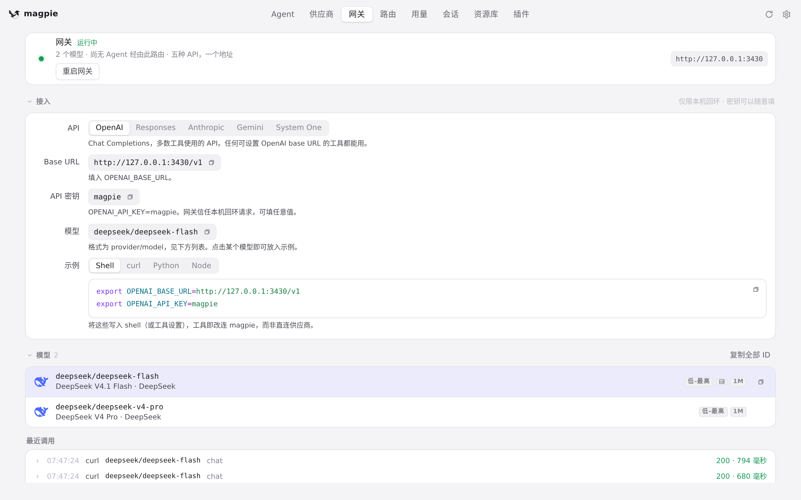
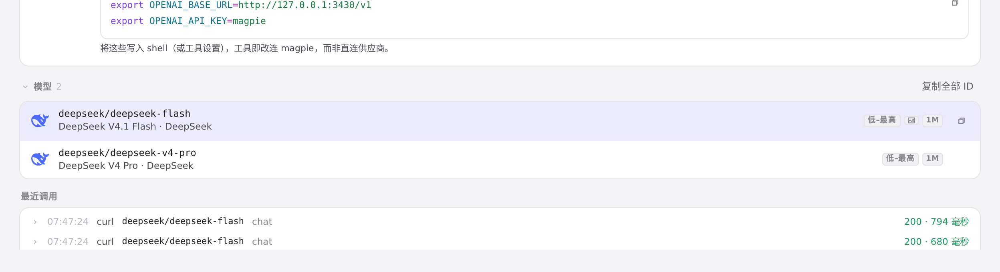
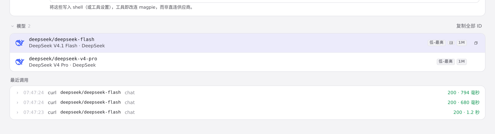

#988 界面预览
commit 2e43e00 · 回到 PR · 网关调用密钥的「全部模型」菜单里条目的顺序变了：各供应商的账号与密钥不再统一堆在所有模型之后的末尾，而是紧跟该供应商自己的模型之后；菜单的文字、分组标题和徽章都没变，也没有新增字符串或设置项。

网关页：密钥菜单所在的位置 · 网关页：网关卡片、「接入」与模型列表

网关页：密钥菜单所在的位置 · 向下看网关页的模型列表

网关页：密钥菜单所在的位置 · 再往下的「最近调用」与页面末尾